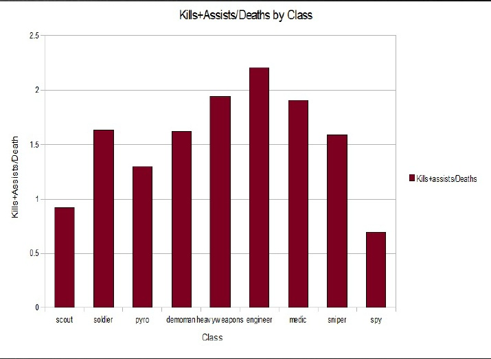

Projects
Weave

What I'm currently working on, and what I do at work, Weave
is simply a WEb Based Analysis and Visualization Environment.
read more...
HTML 5 Examples
During the fall of 2010 I had to create a webpage that showcased some of
the new HTML5 tags in a clean and presentable way. This smiley was generated
with the new Canvas tags. I've used a lot of that code and generated this
website off of it.
read more...
L-Systems in OpenTK
During the spring of 2011, I was taking a graduate geometric modeling class and
decided to pursue as my final project a way to generate trees that animated
out their growth from sapling to full tree but still looked natural. To that
end I found L-Systems play a large part in plants, for their fractal properties.
read more...
TF2 Log Parser

During the fall of 2009, I was taking a graduate Visualization class
and needed to create a project that offered a unique visualization
or analysis on a generated data set. I saw this as a good opportunity
to try out parsing Team Fortress 2 log data, and using it to generate
some simple graphs.
read more...